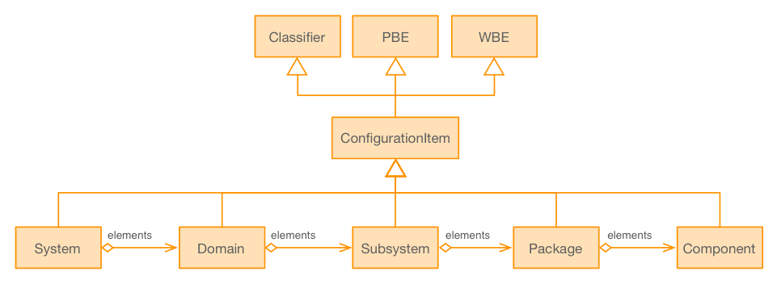

Overall Architecture¶
A system as multifaceted and complex as the GMT has many characteristics to specify and design, e.g. the system organization, operations, physical and behavioral properties, the control hierarchy, communication and interaction of the subcomponents under control, use by human operators, etc.. This means that there are many ways to describe how a system works, all of which come together to form a complete and coherent picture of the overall system, and further refined into technical and operational requirements. The software architecture captures decisions that best meet those requirements, while optimizing over parameters in performance, reliability, maintainability, and cost.
The discussion below gives a cross-sectional view of the overall SWCS architecture, from the standpoint of the SWCS organization, the global SWCS domains, software development layers, software deployment layers, control hierarchy, system health and supervision, software frameworks, and the subsystem modules. More detailed discussions are provided in the appropriate links.
Organization¶
The first phase of the SWCS development starts with the domain engineering process (clause 7.3.1 of ISO12207) that allows one to identify the main architectural components of the SWCS and to group them into uniform categories of: subsystems, packages and components, following the criteria of internal affinity, rate of change propagation and interface size.
{kind=link}
The above figure illustrates the organization hierarchy using the Unified Modeling Language (UML) diagram. System, Domain, Subsystem and Packages are aggregations that make up the hierarchy of the GMT software and control Components, meaning that a system contains multiple domains, a domain contains multiple subsystems, and so forth. The Classifier class provides basic naming and description attributes. The Configuration Item class extends Product Breakdown Element (PBE) and Work Breakdown Element (WBE) classes to enable mapping of the SWCS structure to the GMT project Product Breakdown Structure and Work Breakdown Structure.
Domains¶
The top-level breakdown of the SWCS is based on a clear separation of concerns between four high level domains: the Telescope Control System (TCS), Observatory Operations System (OPS), Observatory Services (OSRV), and Instrument Control System (ICS), as shown in the figure below. The components within each domain are partitioned in a way to facilitate modular software design. Modularity allows different components to evolve independently through the life of the project, to address new scalability needs (e.g., new hardware subsystems require higher performance telemetry), or to address different optimization strategies.

In brief, the four domains and some underlying considerations are:
Telescope Control System – The TCS domain comprises subsystems that are in charge of controlling the telescope optomechanical devices. The hierarchy of the TCS architecture follows a functional decomposition or breakdown that closely mirrors the physical organization of the telescope hardware subsystem. In this scheme, Device Control Subsystems (italicized to emphasize a model component by that name in the software architecture) take care of the elementary and aggregated mechanical degrees of freedom of the telescope, whereas the Wavefront Control and Pointing Kernel Subsystems take care of the integrated behavior of the telescope. The benefit of this structure is that it is likely to be very stable once the project is baselined. While new hardware will be developed and integrated during the life of the project, the core optomechanical design will remain unchanged.
Most of the software subsystems of the TCS can be designed to share a common architecture, which is presented in Device Control Framework. Doing so facilitates reuse of common designs among subsystems, communication among groups due to having common “vocabularies” and concepts, development of a common body of experience, and a more efficient operation and maintenance due to the commonalities shared between subsystems. It also facilitates the creation of common development tools and process artifacts.
Observatory Operations - The OPS groups the software subsystems that provide the capabilities to support efficient operations and workflows of the observatory. This domain architecture follows a functional decomposition based on the core observatory operation workflows. As such the structure of the observatory operation subsystems more closely mirrors the different stages in the operation of an observatory: proposal preparation and planning, observation execution, final data processing, quality control, and archiving of the scientific data.
The detailed specification of workflows and tools will evolve during the project construction phase and likely also during the operations phase as the project gains better understanding of the system and identifies areas where productivity can be improved. The goal is to develop a system that remains flexible and, at the same time, that efficiently supports the operational workflows without constraining the introduction of new ones.
Observatory Services - The OSRV groups the subsystems that provide common infrastructure service components. Each observatory services subsystem (engineering user interface, logging, telemetry, configuration, etc.) addresses a specific structural function. Structural functions are systemic in nature and they provide interfaces for any component in the system (e.g., fault management, telemetry). The OSRV components allow developers to focus in writing application specific code without worrying about low-level infrastructure implementation details.
Instrument Control System – The ICS groups the subsystems.... [TBC]
Development¶
From a development standpoint, the software architecture has the following hierarchy. The application layer residing at the top contains services and tools that run the observatory (via services and operations), telescope control system (TCS), and the instrument control system (ICS). Below the application layer are frameworks, packages, and the operating system on which the applications depend or build.

Deployment¶
Controls¶
An example of the control hierarchy addressed by the SWC software modeling process is shown in Table 10-4. At the top level, the Sequencer subsystem orchestrates the operational workflow of high-level processes, such as telescope pointing and acquisition. At intermediate levels, control and operational logic dictate how to carry out the commanded operations. At the lowest levels, control demands are sent to devices that produce telescope axis motion. The purpose of the SWC software modeling process is to enable physical control that accurately captures the operating principles of the observatory.
Health and Supervision¶
Frameworks¶
The hardware and software components required for operations derive from a process of domain engineering. This result in a set of categories around which to design a framework that implements architectural patterns (e.g., Controller, Pipeline) and common components. The domain engineering process shows that many subsystems share common architecture and many components share similar solutions. The Component Framework includes the following elements: Core Framework, Device Control Framework, Data Processing Framework, Time Distribution Framework, User Interface Framework, and I/O Framework.
Modules¶
The SWCS domains (TCS, OPS, OSRV) are each composed of software subsystem modules. As illustrated in the bottom row of Figure 10-3, each subsystem is then made up of components organized into packages according to their affinity or relationships. The SWC reference architecture16 defines a guide for organizing subsystem components into a set of canonical packages. Examples of packages and their components are shown in Table 10-3. Which packages exist in which subsystem depends on the specific functionality (e.g., some subsystems do not require special calibration components, or do not interface with hardware devices). Table 10-3 describes this pattern, split in two categories:
- Control Packages – These packages are included in subsystems that involve the control of optomechanical hardware Devices.
- Operation Support Packages – These Packages include software components necessary to support health monitoring, automation, and proper operation of a Subsystem. Diagnosis and calibration packages are emphasized early on in the design. This is an area that is often overlooked despite the fact that they may take a significant amount of development effort, especially in the case of complex adaptive optics control subsystems.
Each Component has been assigned to a class that defines its default behavior in the corresponding specification file. Table 10-4 shows an excerpt of the specification file that defines the interface and features of a BaseLinearAxisController (Section 10.3.5.5.3 provides an overview of common motion control Components). This specification is based on the IEC 61800-7-20117 Standard. The standard is concrete, but at the same time is designed to cover a majority of the motion control use cases. The design process captures when a Component (e.g., agws_radial_stage_ctrl) fits this default behavior. This approach provides several benefits:
- The mapping between specification and implementation is as direct as it gets, and greatly facilitates the traceability of requirements.
- The interfaces of similar Components share the same detailed specification (e.g., the interfaces of all the linear stages are the same). This not only allows the development of common control Components, but the possibility to reuse common visualization or calibration Components, as well as testing procedures.
- It is possible to specify accordingly the majority of the elementary degrees of freedom of the GMT as well as some Axis Groups (e.g., BaseLinearXYController for a Cartesian linear stage), as discussed in Section 10.3.2. It is also possible to incorporate fault management, and startup/shut down procedures in the same manner modeled using supervisor components. Supervisors are usually more specific to the application and their implementation, thus require more customization. Other domains, like user interface components or data processing components have been subject to the same design process. Sections 10.3.5.9 and Section 10.3.5.7 describe them respectively.